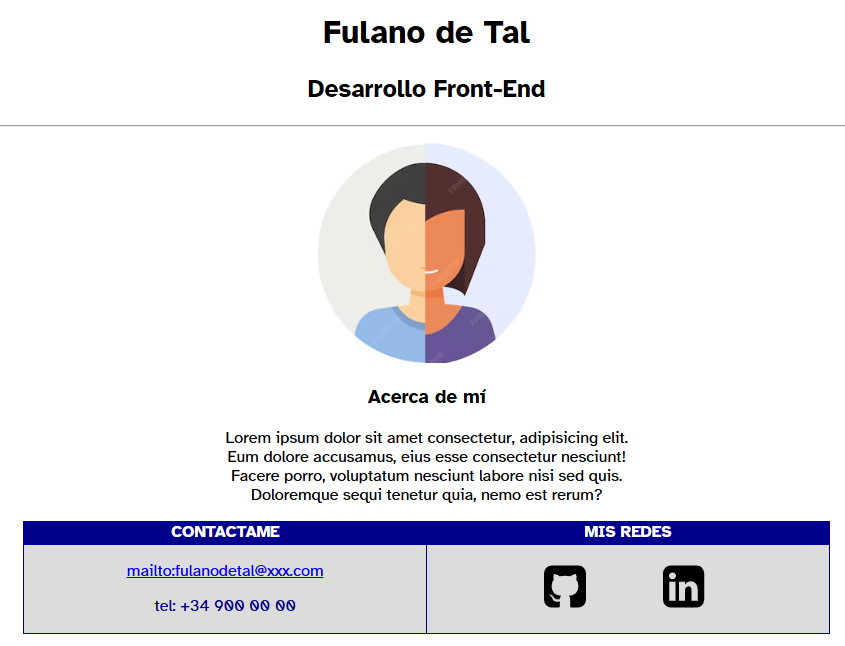

Ejercicio 1
Crea un nuevo proyecto en Astro (sólo para practicar ésta primera aproximación al framework)
Harás una página estilo bio.

Una vez realizada, desplegarás tu primer proyecto en Netlify (Ver Stack2). Es importante, que te registres en el sitio.